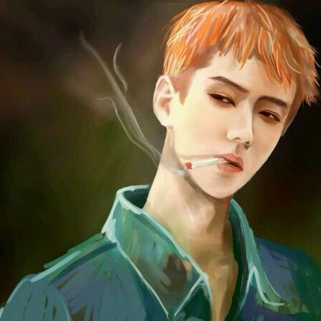
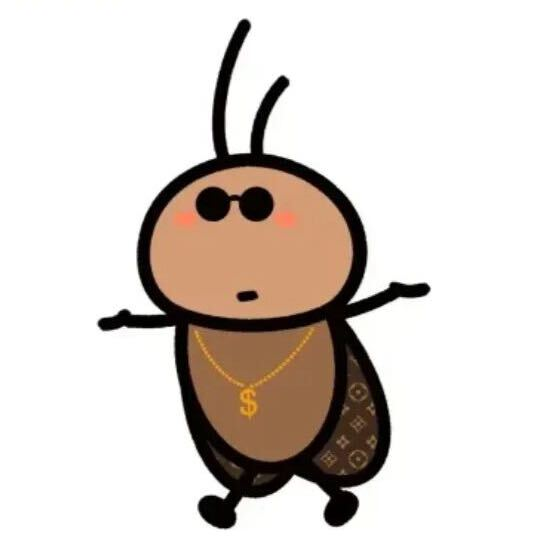

与你相识，是故事的开始；
与你相守，是余生的欢喜~
往右划动 →
你常对我发的表情 ↑
不用刻意迎合
不用假装温柔
做自己就好，老公一直都在
再划一下 →
被你偷了的表情 ↑
你总问老公为什么喜欢你？
最后他妈说一遍
没有 任何理由，就是莫名的、 喜欢你、 别他妈的，再问了！
再划一次吧 →
现在再开组会 ↑
我做这个网页做的入迷
没发现导师在我身后站着
一回头(๑′ᴗ‵๑)
吓你老公一跳继续往下滑
故事的开始
2026-02-23
我们的故事，从此开始

你第一次说喜欢我
我可算问出来了，你可算回答了

第一次见面
你站在门口站岗不敢进
我把你拉进来时，你脸红的像猴屁股

第N次牵手
虽然这个牵手不正经，因为
第一次牵手看你紧张那样，没拍

第一次带着你去学校
虽然总逗你那学校不好，让你看看正规211
但心里认为，宝宝艺术生尊嘟好辛苦

第一次逛大召
虽然那天天气巨冷无比，没有进去
其实进去更失望，哈哈，无知的外地人

第一次看鸽子
你拍照时候盯着啥看呢？怎么不看鸽子？

第一次吃烧麦
虽然没懂，在家连吃三天烧麦何意味
emm，你这么爱吃吗？

第一次看夜景
怎么样，呼和浩特不是那么落后吧
问你喜不喜欢呼市，你是真敢回答不喜欢啊？

最后一张？
我嘞个豆啊
老公连衣服都想抱着你，你这种人，睡觉睡那么远，拽都拽不过来！！
继续往下滑叭


私たちの物語を、時の中にしまっておく
把我们的故事，藏进时光里！--wz❤cwz




